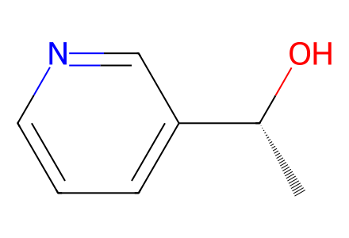
C[C@@H](O)c1cccnc1Main Scheme1 and SI8–20 preparation network; proposed biosynthetic intermediates5–16 not synthetic isolated compounds. Alkynyl sulfoxide25 is a cited preparation boundary. Facts compiled deterministically; independent review pending.
完整 JSON · 逐步 CSV · 路线序列 · SDF · HRMS 核对
| 事件 | 分子连接 | 报告产率 | Canonical reaction SMILES |
|---|---|---|---|
| E01 | 17 + 18 → 19 | 19: 92% | CC(C)(C)OC(=O)n1cc(CC(=O)O)c2ccccc21.C[C@@H](O)c1cccnc1>>C[C@@H](OC(=O)Cc1cn(C(=O)OC(C)(C)C)c2ccccc12)c1cccnc1 |
| E02 | 19 → 20 | not reported | C[C@@H](OC(=O)Cc1cn(C(=O)OC(C)(C)C)c2ccccc12)c1cccnc1>>C[C@@H](OC(=O)Cc1cn(C(=O)OC(C)(C)C)c2ccccc12)C1=CC=CN(C(=O)OCc2ccccc2)C1 |
| E03 | 20 → 21 | 21: 65% | C[C@@H](OC(=O)Cc1cn(C(=O)OC(C)(C)C)c2ccccc12)C1=CC=CN(C(=O)OCc2ccccc2)C1>>C/C=C1\CN(C(=O)OCc2ccccc2)C=C[C@@H]1[C@@H](C(=O)O)c1cn(C(=O)OC(C)(C)C)c2ccccc12 |
| E04 | 21 → 22 | 22: 75% | C/C=C1\CN(C(=O)OCc2ccccc2)C=C[C@@H]1[C@@H](C(=O)O)c1cn(C(=O)OC(C)(C)C)c2ccccc12>>C/C=C1\CN(C(=O)OCc2ccccc2)[C@@H]2C[C@H]1[C@H](C(=O)O)c1c2[nH]c2ccccc12 |
| E05 | 22 → 23 | 23: 92% | C/C=C1\CN(C(=O)OCc2ccccc2)[C@@H]2C[C@H]1[C@H](C(=O)O)c1c2[nH]c2ccccc12>>C/C=C1\CN(C(=O)OCc2ccccc2)[C@@H]2C[C@H]1[C@H](CO)c1c2[nH]c2ccccc12 |
| E06 | 23 + (S)-25 → 24 | 24: 82% | C#C[S@](=O)c1ccc(C)cc1.C/C=C1\CN(C(=O)OCc2ccccc2)[C@@H]2C[C@H]1[C@H](CO)c1c2[nH]c2ccccc12>>C/C=C1\CN(C(=O)OCc2ccccc2)[C@@H]2C[C@H]1[C@H](CO/C=C/S(=O)c1ccc(C)cc1)c1c2[nH]c2ccccc12 |
| E07 | 24 → 26 | 26: 72% | C/C=C1\CN(C(=O)OCc2ccccc2)[C@@H]2C[C@H]1[C@H](CO/C=C/S(=O)c1ccc(C)cc1)c1c2[nH]c2ccccc12>>CC[C@@]12CN(C(=O)OCc3ccccc3)[C@@H]3C[C@H]1[C@H](CO[C@@H]2CS(=O)c1ccc(C)cc1)c1c3[nH]c2ccccc12 |
| E08 | 26 → 27 | 27: 78% | CC[C@@]12CN(C(=O)OCc3ccccc3)[C@@H]3C[C@H]1[C@H](CO[C@@H]2CS(=O)c1ccc(C)cc1)c1c3[nH]c2ccccc12>>CC[C@@]12CN(C(=O)OCc3ccccc3)[C@@H]3C[C@H]1[C@H](CO[C@@H]2CO)c1c3[nH]c2ccccc12 |
| E09 | 27 → 28 | 28: 90% | CC[C@@]12CN(C(=O)OCc3ccccc3)[C@@H]3C[C@H]1[C@H](CO[C@@H]2CO)c1c3[nH]c2ccccc12>>CC[C@@]12CN(C(=O)OCc3ccccc3)[C@@H]3C[C@H]1[C@H](CO[C@@H]2COS(=O)(=O)c1ccc(C)cc1)c1c3[nH]c2ccccc12 |
| E10 | 28 → 29 | 29: 93% | CC[C@@]12CN(C(=O)OCc3ccccc3)[C@@H]3C[C@H]1[C@H](CO[C@@H]2COS(=O)(=O)c1ccc(C)cc1)c1c3[nH]c2ccccc12>>CC[C@@]12CN(C(=O)OCc3ccccc3)[C@@H]3C[C@H]1[C@@H]1CO[C@@H]2C[C@]12C3=Nc1ccccc12 |
| E11 | 29 → 30 | 30: 62% | CC[C@@]12CN(C(=O)OCc3ccccc3)[C@@H]3C[C@H]1[C@@H]1CO[C@@H]2C[C@]12C3=Nc1ccccc12>>CC[C@@]12CN(C(=O)OCc3ccccc3)[C@@H]3C[C@H]1[C@@H]1C(=O)O[C@@H]2C[C@]12C3=Nc1ccccc12 |
| E12 | 30 → 31 | 31: 79% | CC[C@@]12CN(C(=O)OCc3ccccc3)[C@@H]3C[C@H]1[C@@H]1C(=O)O[C@@H]2C[C@]12C3=Nc1ccccc12>>CC[C@@]12CN[C@@H]3C[C@H]1[C@@H]1C(=O)O[C@@H]2C[C@]12C3=Nc1ccccc12 |
| E13 | 31 → 1 | 1: 72% | CC[C@@]12CN[C@@H]3C[C@H]1[C@@H]1C(=O)O[C@@H]2C[C@]12C3=Nc1ccccc12>>CC[C@@]12C=N[C@@H]3C[C@H]1[C@@H]1C(=O)O[C@@H]2C[C@]12C3=Nc1ccccc12 |
| E14 | 31 → 2 | 2: 83% | CC[C@@]12CN[C@@H]3C[C@H]1[C@@H]1C(=O)O[C@@H]2C[C@]12C3=Nc1ccccc12>>CC[C@@]12CN(C)[C@@H]3C[C@H]1[C@@H]1C(=O)O[C@@H]2C[C@]12C3=Nc1ccccc12 |
| E15 | 2 → 3 | 3: 95% | CC[C@@]12CN(C)[C@@H]3C[C@H]1[C@@H]1C(=O)O[C@@H]2C[C@]12C3=Nc1ccccc12>>CC[C@@]12CN(C)[C@@H]3C[C@H]1[C@@H]1C(=O)O[C@@H]2C[C@@]12c1ccccc1N[C@@H]32 |
| E16 | 31 → 4 | 4: 93% | CC[C@@]12CN[C@@H]3C[C@H]1[C@@H]1C(=O)O[C@@H]2C[C@]12C3=Nc1ccccc12>>CC[C@@]12C=N[C@@H]3C[C@H]1[C@@H]1C(=O)O[C@@H]2C[C@@]12c1ccccc1N[C@@H]32 |
| C01 | 23 + (R)-25 → 24-S-epimer | not reported | C#C[S@@](=O)c1ccc(C)cc1.C/C=C1\CN(C(=O)OCc2ccccc2)[C@@H]2C[C@H]1[C@H](CO)c1c2[nH]c2ccccc12>>C/C=C1\CN(C(=O)OCc2ccccc2)[C@@H]2C[C@H]1[C@H](CO/C=C/S(=O)c1ccc(C)cc1)c1c2[nH]c2ccccc12 |
| C02 | 24-S-epimer → 26-S-epimer | 26-S-epimer: 41% | C/C=C1\CN(C(=O)OCc2ccccc2)[C@@H]2C[C@H]1[C@H](CO/C=C/S(=O)c1ccc(C)cc1)c1c2[nH]c2ccccc12>>CC[C@@]12CN(C(=O)OCc3ccccc3)[C@@H]3C[C@H]1[C@H](CO[C@@H]2CS(=O)c1ccc(C)cc1)c1c3[nH]c2ccccc12 |
| T01 | 24 → 26 | 26: 38% | C/C=C1\CN(C(=O)OCc2ccccc2)[C@@H]2C[C@H]1[C@H](CO/C=C/S(=O)c1ccc(C)cc1)c1c2[nH]c2ccccc12>>CC[C@@]12CN(C(=O)OCc3ccccc3)[C@@H]3C[C@H]1[C@H](CO[C@@H]2CS(=O)c1ccc(C)cc1)c1c3[nH]c2ccccc12 |
| T02 | 24 → 26 | 26: 43% | C/C=C1\CN(C(=O)OCc2ccccc2)[C@@H]2C[C@H]1[C@H](CO/C=C/S(=O)c1ccc(C)cc1)c1c2[nH]c2ccccc12>>CC[C@@]12CN(C(=O)OCc3ccccc3)[C@@H]3C[C@H]1[C@H](CO[C@@H]2CS(=O)c1ccc(C)cc1)c1c3[nH]c2ccccc12 |
| T03 | 24 → 26 | 26: 58% | C/C=C1\CN(C(=O)OCc2ccccc2)[C@@H]2C[C@H]1[C@H](CO/C=C/S(=O)c1ccc(C)cc1)c1c2[nH]c2ccccc12>>CC[C@@]12CN(C(=O)OCc3ccccc3)[C@@H]3C[C@H]1[C@H](CO[C@@H]2CS(=O)c1ccc(C)cc1)c1c3[nH]c2ccccc12 |
| T04 | 24 → 26 | 26: 67% | C/C=C1\CN(C(=O)OCc2ccccc2)[C@@H]2C[C@H]1[C@H](CO/C=C/S(=O)c1ccc(C)cc1)c1c2[nH]c2ccccc12>>CC[C@@]12CN(C(=O)OCc3ccccc3)[C@@H]3C[C@H]1[C@H](CO[C@@H]2CS(=O)c1ccc(C)cc1)c1c3[nH]c2ccccc12 |
| T05 | 24 → 26 | 26: 72% | C/C=C1\CN(C(=O)OCc2ccccc2)[C@@H]2C[C@H]1[C@H](CO/C=C/S(=O)c1ccc(C)cc1)c1c2[nH]c2ccccc12>>CC[C@@]12CN(C(=O)OCc3ccccc3)[C@@H]3C[C@H]1[C@H](CO[C@@H]2CS(=O)c1ccc(C)cc1)c1c3[nH]c2ccccc12 |
| O01 | 29 → 30 | not reported | CC[C@@]12CN(C(=O)OCc3ccccc3)[C@@H]3C[C@H]1[C@@H]1CO[C@@H]2C[C@]12C3=Nc1ccccc12>>CC[C@@]12CN(C(=O)OCc3ccccc3)[C@@H]3C[C@H]1[C@@H]1C(=O)O[C@@H]2C[C@]12C3=Nc1ccccc12 |
| O02 | 29 → 30 | not reported | CC[C@@]12CN(C(=O)OCc3ccccc3)[C@@H]3C[C@H]1[C@@H]1CO[C@@H]2C[C@]12C3=Nc1ccccc12>>CC[C@@]12CN(C(=O)OCc3ccccc3)[C@@H]3C[C@H]1[C@@H]1C(=O)O[C@@H]2C[C@]12C3=Nc1ccccc12 |
| O03 | 29 → 30 | not reported | CC[C@@]12CN(C(=O)OCc3ccccc3)[C@@H]3C[C@H]1[C@@H]1CO[C@@H]2C[C@]12C3=Nc1ccccc12>>CC[C@@]12CN(C(=O)OCc3ccccc3)[C@@H]3C[C@H]1[C@@H]1C(=O)O[C@@H]2C[C@]12C3=Nc1ccccc12 |

C[C@@H](O)c1cccnc1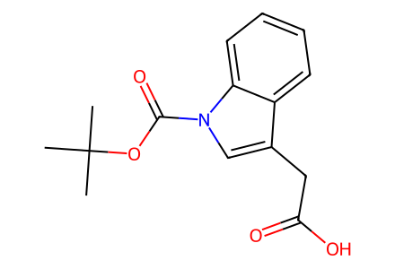
CC(C)(C)OC(=O)n1cc(CC(=O)O)c2ccccc21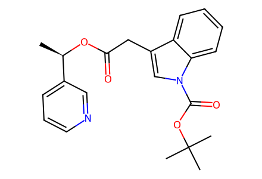
C[C@@H](OC(=O)Cc1cn(C(=O)OC(C)(C)C)c2ccccc12)c1cccnc1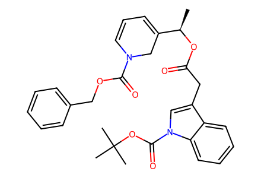
C[C@@H](OC(=O)Cc1cn(C(=O)OC(C)(C)C)c2ccccc12)C1=CC=CN(C(=O)OCc2ccccc2)C1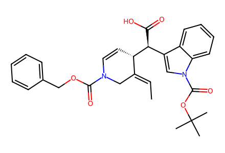
C/C=C1\CN(C(=O)OCc2ccccc2)C=C[C@@H]1[C@@H](C(=O)O)c1cn(C(=O)OC(C)(C)C)c2ccccc12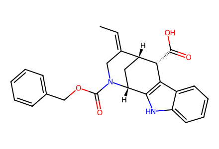
C/C=C1\CN(C(=O)OCc2ccccc2)[C@@H]2C[C@H]1[C@H](C(=O)O)c1c2[nH]c2ccccc12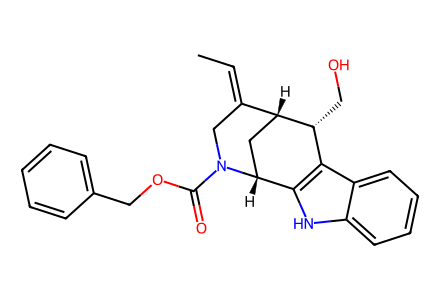
C/C=C1\CN(C(=O)OCc2ccccc2)[C@@H]2C[C@H]1[C@H](CO)c1c2[nH]c2ccccc12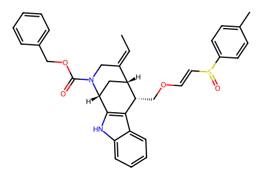
C/C=C1\CN(C(=O)OCc2ccccc2)[C@@H]2C[C@H]1[C@H](CO/C=C/S(=O)c1ccc(C)cc1)c1c2[nH]c2ccccc12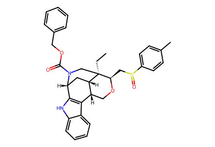
CC[C@@]12CN(C(=O)OCc3ccccc3)[C@@H]3C[C@H]1[C@H](CO[C@@H]2CS(=O)c1ccc(C)cc1)c1c3[nH]c2ccccc12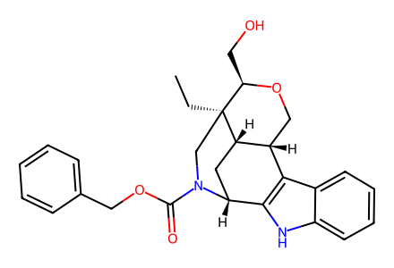
CC[C@@]12CN(C(=O)OCc3ccccc3)[C@@H]3C[C@H]1[C@H](CO[C@@H]2CO)c1c3[nH]c2ccccc12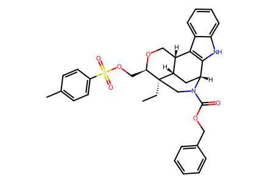
CC[C@@]12CN(C(=O)OCc3ccccc3)[C@@H]3C[C@H]1[C@H](CO[C@@H]2COS(=O)(=O)c1ccc(C)cc1)c1c3[nH]c2ccccc12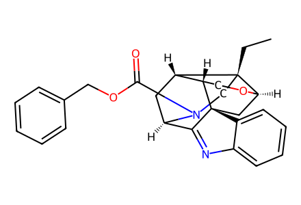
CC[C@@]12CN(C(=O)OCc3ccccc3)[C@@H]3C[C@H]1[C@@H]1CO[C@@H]2C[C@]12C3=Nc1ccccc12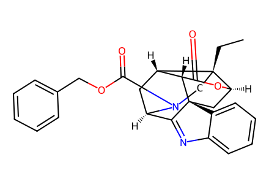
CC[C@@]12CN(C(=O)OCc3ccccc3)[C@@H]3C[C@H]1[C@@H]1C(=O)O[C@@H]2C[C@]12C3=Nc1ccccc12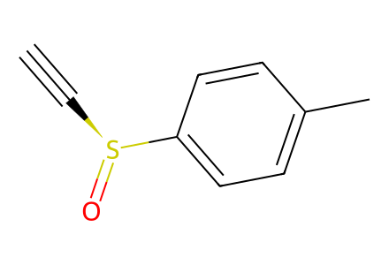
C#C[S@](=O)c1ccc(C)cc1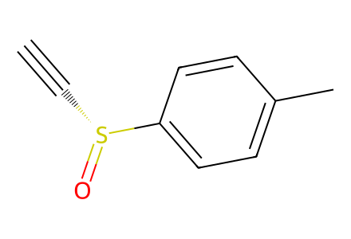
C#C[S@@](=O)c1ccc(C)cc1
C/C=C1\CN(C(=O)OCc2ccccc2)[C@@H]2C[C@H]1[C@H](CO/C=C/S(=O)c1ccc(C)cc1)c1c2[nH]c2ccccc12
CC[C@@]12CN(C(=O)OCc3ccccc3)[C@@H]3C[C@H]1[C@H](CO[C@@H]2CS(=O)c1ccc(C)cc1)c1c3[nH]c2ccccc12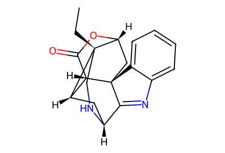
CC[C@@]12CN[C@@H]3C[C@H]1[C@@H]1C(=O)O[C@@H]2C[C@]12C3=Nc1ccccc12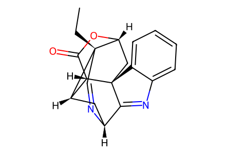
CC[C@@]12C=N[C@@H]3C[C@H]1[C@@H]1C(=O)O[C@@H]2C[C@]12C3=Nc1ccccc12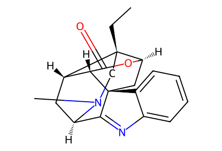
CC[C@@]12CN(C)[C@@H]3C[C@H]1[C@@H]1C(=O)O[C@@H]2C[C@]12C3=Nc1ccccc12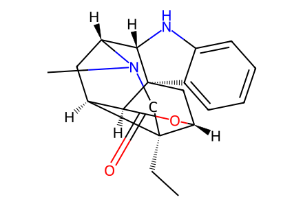
CC[C@@]12CN(C)[C@@H]3C[C@H]1[C@@H]1C(=O)O[C@@H]2C[C@@]12c1ccccc1N[C@@H]32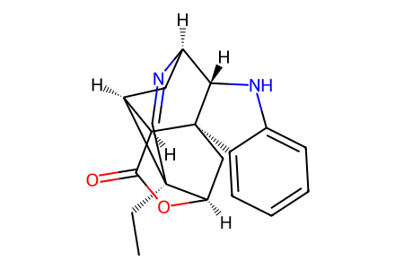
CC[C@@]12C=N[C@@H]3C[C@H]1[C@@H]1C(=O)O[C@@H]2C[C@@]12c1ccccc1N[C@@H]32